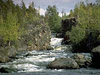

Climate
Landscape
Soil
Vegetation
Wildlife
Human Use
|
 |
Climate:
| Total annual precipitation (mm) |
362 |
| Annual snowfall (cm) |
215 |
| Water deficit (mm) |
--- |
| Mean July temperature (C) |
+16.2 |
| Mean January temperature (C) |
-26.8 |

The climate is subhumid to humid and cold.There are long, very
cold winters and short, cool summers. Annual precipitation varies
greatly from year to year.
| |
Landscape:
The Precambrian Shield outcrops in bedrock commonly granite, and
coarse soils. Tazin Lake Upland is an ice-scoured hilly area with
numerous small to medium lakes. The Lake Athabasca section has
massive rocks that form broad sloping uplands and lowlands.
|
Soil:
Permafrost
is widespread throughout the region where there are organic soils.
|
Vegetation:

The forest consists predominantly of medium to tall stands of
black spruce (shown left) and jack pine, some paper birch.
The
understories
consist of feather moss, bog cranberry, blueberry, Labrador
tea and lichen. Black spruce is the climax species but fires have restricted its abundance.
Fire adapted jack pine grows best on the deeper soils, and is
the prevalent tree on warm and dry sites. In the absence of fires,
the trend is toward black spruce on the moist and cool sites.
|
Wildlife:
This is important winter range for barren-ground caribou. Other
characteristic wildlife include moose, black bear, lynx,
wolf, beaver, muskrat, snowshoe hare. Spruce grouse is the most common
upland game bird. Waterfowl and other birds also occur, like the ptarmigan shown on the left.
|
Human Use:
People make a living trapping, hunting and in tourism, while enjoying both land and water oriented recreation.
|
|
|